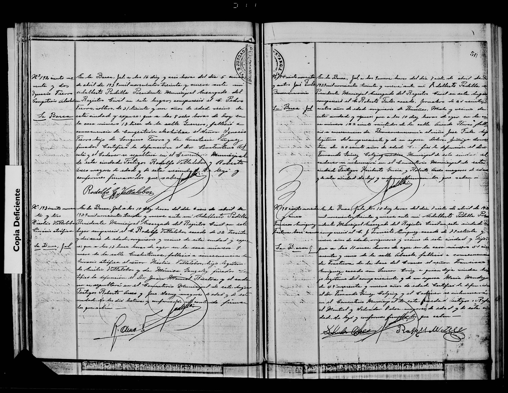

Francisca Enriquez

| Tipo | Acta de defunción |
| Fecha | 1939 (día y mes: ilegible/duda) |
| Lugar | La Barca |
| Difunta | Francisca Enriquez |
| Padres | C. J. Tránsito Enríquez y María Méndez (según el índice) |
Transcripción pendiente de verificación: los datos provienen del índice del registro; el manuscrito no ha sido releído línea por línea. Todo texto manuscrito no verificado se marca «ilegible/duda».